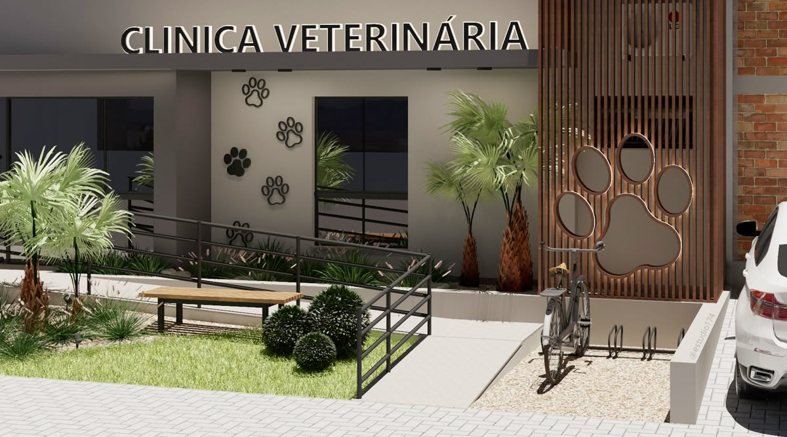

Veterinaria La Mary
Nuestra Veterinaria fué fundada en 1997 por el Dr. Amilcar Rodriguez, recibido de la Universidad Nacional de Corrientes ese mismo año.
Cuenta con servicio de internación, peluqueria,vacunatorio y emergencias las 24 hs,los 365 dias del año.
Desde entonces nos ubicamos en Avenida las Magnolias, 520, en pleno centro de nuestra ciudad.
